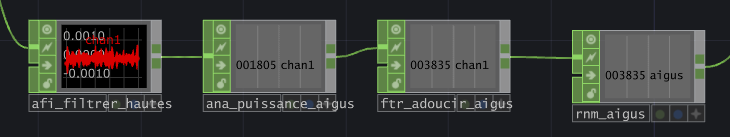
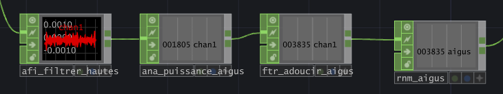

Recette en pot
Logiciels et languages utilisés
unity
Résumé

L'objectif du projet était de faire un jeu en 3D. Donc, savoir comment gérer la caméra, le click de souris, le son et l'ambiance 3d.
Le début

 

Dans un autre cours, nous avions dû faire un modèle 3D d'un auto garford pour l'implémenter dans notre jeu. Après, nous avions dû coder des robots à détruire qui nous permettrons d'accéder à une manivelle et une fois la manivelle d'enclencher, d'aller au niveau suivant.
Deuxième niveau

Au deuxième niveau, nous devons trouver des lampes torches pour gagner. Donc nous avions commencer par coder comment allait être le but du niveau donc l'objectif de click sur les lampes torches.
L'ambiance

Ensuite, nous avions crée tout ce qui touche à l' ambiance du jeu donc, j'ai mis un brouillard, car je voulais que mon jeu soit dans une ambiance glauque. J'ai ensuite mis une radio qui faisait le bruit de neige (l'équivalent pour la télé) pour améliorer l'effet éppeurant.Pour finir, j'ai ajouté un effet à la lumière du feu pour qu'il puisse être plus réaliste.
l'interface

Finalement, une fois tout le jeu en soit fini, il me reste juste à créer l'interface. Donc j'ai créer un timer pour rendre le niveau plus dur.Ensuite j'ai mis un compteur pour savoir combien de lampes torches il reste à trouver.